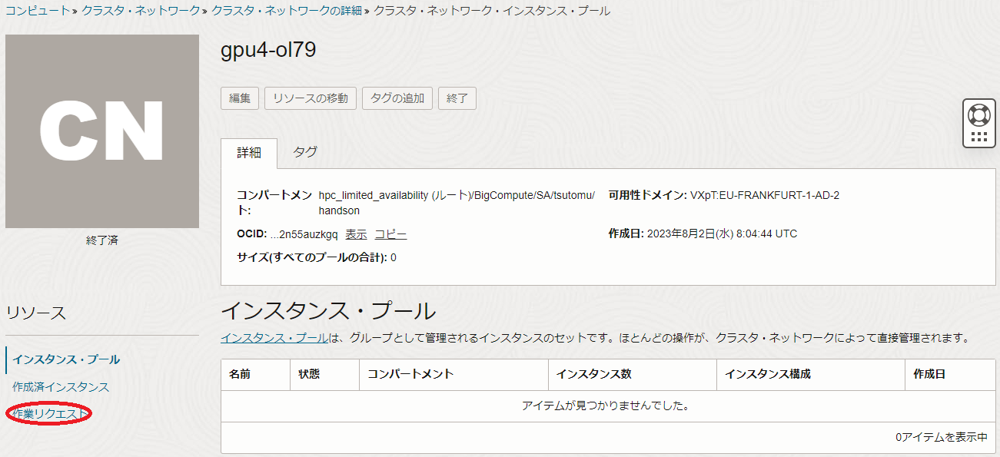
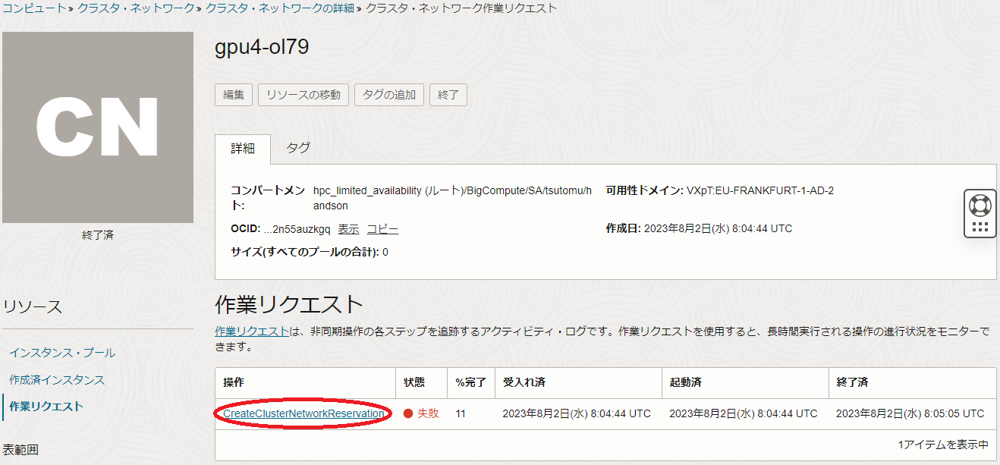
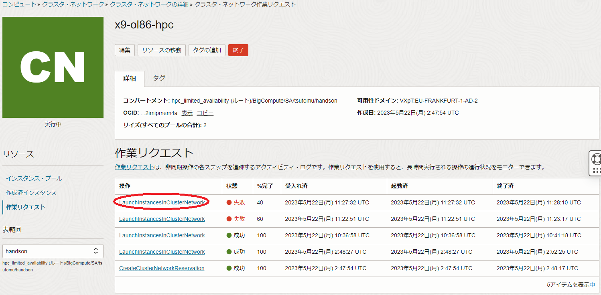
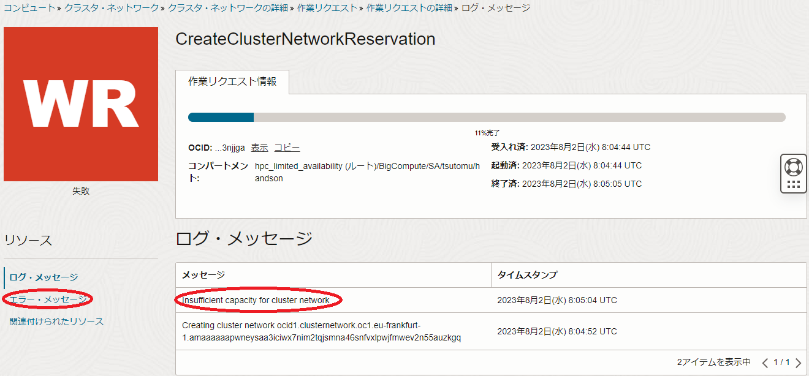
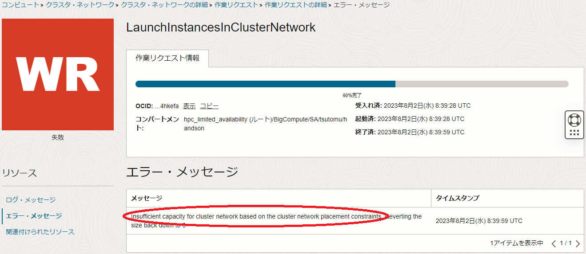
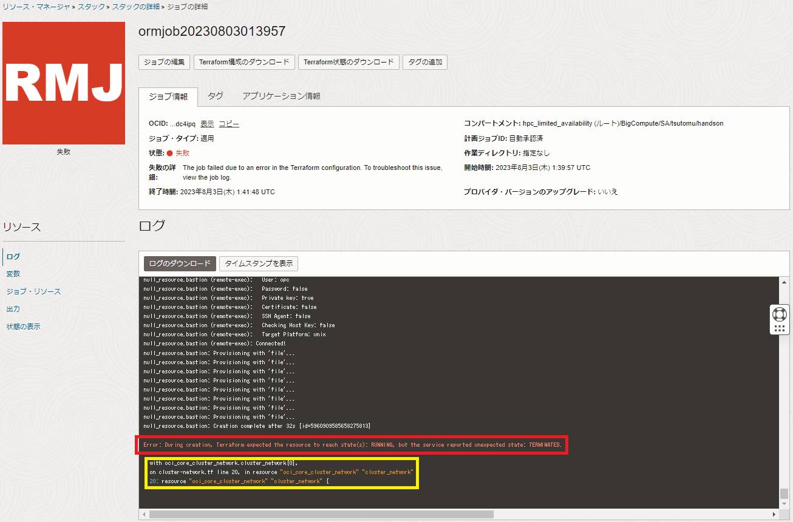

0. 概要
クラスタ・ネットワーク と共に計算/GPUノードを新規に作成する場合や、既に作成された クラスタ・ネットワーク に計算/GPUノードを追加する場合、また既に作成された クラスタ・ネットワーク の計算/GPUノードを置き換える場合、そのノード数によってはリソース不足により失敗する場合があります。
新規に作成するケースで失敗の原因として考えられるのは、データセンター内に存在する クラスタ・ネットワーク のどの論理的なパーティションにおいても、指定したシェイプの指定したインスタンス数の空きがない場合です。
また、計算/GPUノードを追加するケースや置き換えるケースで失敗の原因として考えられるのは、既に作成されている クラスタ・ネットワーク の論理的なパーティションにおいて、指定したシェイプの指定したインスタンス数の空きがない場合です。
これらの問題が発生するケースは、出力されるエラーメッセージを確認することにより、前述のシナリオで失敗したことを特定することが出来ます。
ただこのエラーメッセージは、以下どの方法で クラスタ・ネットワーク の作成を行ったかにより、エラーメッセージの確認方法が異なります。
-
OCIコンソール
以下の OCI HPCチュートリアル集 に従って構築したHPC/GPUクラスタのように、OCIコンソールの コンピュート → クラスタ・ネットワーク → クラスタ・ネットワークの作成 ボタン から クラスタ・ネットワーク を作成するケースです。 -
リソース・マネージャ
以下の OCI HPCチュートリアル集 に従って構築したHPC/GPUクラスタのように、 リソース・マネージャ に作成した スタック から クラスタ・ネットワーク を作成するケースです。- HPCクラスタを構築する(スタティッククラスタ自動構築編)
- HPCクラスタを構築する(オンデマンドクラスタ自動構築編)
- HPCクラスタを構築する(基礎インフラ自動構築編) の リソース・マネージャ を使用する方法
- GPUクラスタを構築する(スタティッククラスタ自動構築編)
- GPUクラスタを構築する(オンデマンドクラスタ自動構築編)
- GPUクラスタを構築する(基礎インフラ自動構築編) の リソース・マネージャ を使用する方法
-
Terraform CLI
以下の OCI HPCチュートリアル集 に従って構築したHPC/GPUクラスタのように、 Terraform 実行環境で Terraform CLIから クラスタ・ネットワーク を作成するケースです。- HPCクラスタを構築する(基礎インフラ自動構築編) の Terraform CLIを使用する方法
- GPUクラスタを構築する(基礎インフラ自動構築編) の Terraform CLIを使用する方法
以降では、作成方法毎のエラーメッセージ確認方法と、前述のシナリオで作成に失敗した場合に発生するエラーメッセージを解説します。
1. 作成方法毎のエラーメッセージ確認方法
1-1. OCIコンソールを使用する場合
本章は、OCIコンソールの コンピュート → クラスタ・ネットワーク → クラスタ・ネットワークの作成 ボタンから クラスタ・ネットワーク を新規作成するケースや、OCIコンソールの クラスタ・ネットワークの編集 サイドバーで インスタンス数 フィールドを指定して計算/GPUノードを追加するケース、またOCIコンソールの インスタンス・プール 画面で インスタンスのデタッチ メニューから計算/GPUノードを置き換えるケースで作成に失敗した場合、どのようにエラーメッセージを確認するかを解説します。
クラスタ・ネットワーク の新規作成や計算/GPUノードの追加・置き換え操作が失敗したら、OCIコンソールの コンピュート → クラスタ・ネットワーク メニューで表示される画面で当該 クラスタ・ネットワーク をクリックし、以下画面で 作業リクエスト メニューをクリックします。

表示される以下画面の 作業リクエスト フィールドで、 状態 列が失敗となった 操作 列の作業リクエスト（以下の例では CreateClusterNetworkReservation ）をクリックします。

また以下の例は、 LaunchinstanceinClusterNetwork をクリックします。

表示される以下画面の ログ・メッセージ フィールドで、最後に表示されているメッセージ（以下の例では Insufficient capacity for cluster network ）を確認します。

また、前述の画面の エラー・メッセージ メニューをクリックして表示される以下画面の エラー・メッセージ フィールドで、最後に表示されているメッセージ（以下の例では Insufficient capacity for cluster network based on the cluster network placement constraints ）を確認します。

クラスタ・ネットワーク の作成失敗の原因を問題判別する際着目するメッセージは、これらの ログ・メッセージ フィールドと エラー・メッセージ フィールドに表示されるメッセージです。
1-2. リソース・マネージャを使用する場合
本章は、 リソース・マネージャ を使用し、 HPCクラスタスタック や GitHub 等から公開されている Terraform スクリプトを基に作成する スタック で クラスタ・ネットワーク を新規作成するケースで作成に失敗した場合、どのようにエラーメッセージを確認するかを解説します。
スタック を適用して クラスタ・ネットワーク の作成に失敗するケースは、まずユーザからは適用した スタック の以下 ジョブの詳細 画面の ログ フィールドの最後に表示されるエラーメッセージを確認することになります。

この リソース・マネージャ から表示されるエラーメッセージは、赤枠のメッセージ（前述の例では Error: During creation, Terraform expected the resource to reach state(s): RUNNING, but the service reported unexpected state: TERMINATED. ）でリソースの作成に失敗したことが分かり、黄枠のメッセージ（前述の例では with oci_core_cluster_network.cluster_network[0], ）で失敗したリソースが クラスタ・ネットワーク であることを示していますが、 クラスタ・ネットワーク の作成に失敗した原因を直接的に示していません。
そこで以降では、この スタック から作成された クラスタ・ネットワーク のリソースをOCIコンソールで確認し、原因につながるエラーメッセージを特定します。
OCIコンソールの コンピュート → クラスタ・ネットワーク メニューで表示される画面で当該 クラスタ・ネットワーク をクリックし、以下画面で 作業リクエスト メニューをクリックします。
表示される以下画面の 作業リクエスト フィールドで、 状態 列が失敗となった 操作 列の作業リクエスト（以下の例では CreateClusterNetworkReservation ）をクリックします。
表示される以下画面の ログ・メッセージ フィールドで、最後に表示されているメッセージ（以下の例では Insufficient capacity for cluster network ）を確認します。
また、前述の画面の エラー・メッセージ メニューをクリックして表示される以下画面の エラー・メッセージ フィールドで、最後に表示されているメッセージ（以下の例では Insufficient capacity for cluster network based on the cluster network placement constraints ）を確認します。
クラスタ・ネットワーク の作成失敗の原因を問題判別する際着目するメッセージは、これらの ログ・メッセージ フィールドと エラー・メッセージ フィールドに表示されるメッセージです。
1-3. Terraform CLIを使用する場合
本章は、 Terraform 実行環境で Terraform CLIで クラスタ・ネットワーク を新規作成するケースで作成に失敗した場合、どのようにエラーメッセージを確認するかを解説します。
Terraform CLIで クラスタ・ネットワーク の作成に失敗するケースは、まずユーザからは以下の terraform apply コマンド実行時のエラーメッセージを確認することになります。
$ terraform apply --auto-approve
:
:
:
│ Error: During creation, Terraform expected the resource to reach state(s): RUNNING, but the service reported unexpected state: TERMINATED. <---(1)
│
│ with oci_core_cluster_network.cn[0], <--- (2)
│ on cn.tf line 25, in resource "oci_core_cluster_network" "cn":
│ 25: resource "oci_core_cluster_network" "cn" {
この リソース・マネージャ から表示されるエラーメッセージは、(1)のメッセージ（前述の例では Error: During creation, Terraform expected the resource to reach state(s): RUNNING, but the service reported unexpected state: TERMINATED. ）でリソースの作成に失敗したことが分かり、(2)のメッセージ（前述の例では with oci_core_cluster_network.cluster_network[0], ）で失敗したリソースが クラスタ・ネットワーク であることを示していますが、 クラスタ・ネットワーク の作成に失敗した原因を直接的に示していません。
そこで以降では、この Terraform CLIから作成された クラスタ・ネットワーク のリソースをOCIコンソールで確認し、原因につながるエラーメッセージを特定します。
OCIコンソールの コンピュート → クラスタ・ネットワーク メニューで表示される画面で当該 クラスタ・ネットワーク をクリックし、以下画面で 作業リクエスト メニューをクリックします。
表示される以下画面の 作業リクエスト フィールドで、 状態 列が失敗となった 操作 列の作業リクエスト（以下の例では CreateClusterNetworkReservation ）をクリックします。
表示される以下画面の ログ・メッセージ フィールドで、最後に表示されているメッセージ（以下の例では Insufficient capacity for cluster network ）を確認します。
また、前述の画面の エラー・メッセージ メニューをクリックして表示される以下画面の エラー・メッセージ フィールドで、最後に表示されているメッセージ（以下の例では Insufficient capacity for cluster network based on the cluster network placement constraints ）を確認します。
クラスタ・ネットワーク の作成失敗の原因を問題判別する際着目するメッセージは、これらの ログ・メッセージ フィールドと エラー・メッセージ フィールドに表示されるメッセージです。
2. エラーメッセージによる原因の特定
2-0. 概要
本章は、 1. 作成方法毎のエラーメッセージ確認方法 で特定したエラーメッセージを基に、リソース不足により発生する作成失敗の原因を特定します。
2-1. Insufficient capacity for cluster network
作成に失敗した クラスタ・ネットワーク の ログ・メッセージ フィールドや エラー・メッセージ フィールドにこのメッセージが出力されるケースは、データセンター内に存在する クラスタ・ネットワーク のどの論理的なパーティションにおいても、指定したシェイプの指定したインスタンス数の空きがない場合です。
この場合、以下の対応が考えられます。
-
可用性ドメインや リージョンを変更して再作成する
この方法は、他の 可用性ドメインや リージョンの クラスタ・ネットワーク の論理的なパーティションで、指定したシェイプの指定したインスタンス数の空きが存在することを期待し、行います。 -
時間を空けて再作成する
この方法は、他のユーザのリソース破棄により利用可能な状態になることを期待し、行います。
2-2. Insufficient capacity for cluster network based on the cluster network placement constraints
作成に失敗した クラスタ・ネットワーク の ログ・メッセージ フィールドや エラー・メッセージ フィールドにこのメッセージが出力されるケースは、既存の クラスタ・ネットワーク に接続する計算/GPUノードのノード数を増やしたり、既存の計算/GPUノードを置き換える際、この クラスタ・ネットワーク の論理的なパーティション内に指定したシェイプの指定したインスタンス数の空きがない場合です。
この場合、以下の対応が考えられます。
-
ノード数増加・置き換え手順のリトライ
当該 クラスタ・ネットワーク の論理的なパーティション内にインスタンスの空きが発生するタイミングを狙い、時間をおいてノード数増加手順や置き換え手順をリトライします。
ただこの方法は、他のユーザがインスタンスを終了する等のタイミングに出くわさない限り、同様に失敗します。 -
新たな クラスタ・ネットワーク の作成
追加するノードが既存のノードと クラスタ・ネットワーク を介して通信する必要が無い場合、既存の クラスタ・ネットワーク はそのままに、追加するノード数の計算/GPUノードを新たに クラスタ・ネットワーク とともに作成します。 -
クラスタ・ネットワーク 再作成
既存の クラスタ・ネットワーク を計算/GPUノードと共に一旦終了し、新たに追加後のノード数の計算/GPUノードを クラスタ・ネットワーク から作成します。
以上の背景から、運用中にHPC/GPUクラスタのノード数を増やす可能性がある場合や、ハードウェア障害による利用可能なノード数の減少やノードの置き換えに備えて、予めその分のノード数を含めた計算/GPUノードの クラスタ・ネットワーク を作成しておくことで、既存の クラスタ・ネットワーク に接続するノード数増加や置き換え時の問題を回避することが出来ます。
例えば、運用に必要なノード数が128ノードの場合、129ノードで クラスタ・ネットワーク を構築してそのうちの128ノードを運用に供し、運用中の128ノードのうち1ノードでハードウェア障害等の問題が発生したら、このノードを運用から外して予備ノードを運用に組み込む、という運用方針が考えられます。